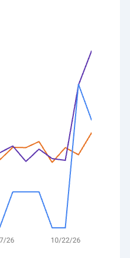

老外分享了一个用 AI 自动加内链做 SEO 的方法。我把它改成了自己的版本，英文工程书直接丢在原帖评论区了 👇
它能做什么：
▸ 每天盯每个关键词的前三名，记下它们改了内容、结构、内链、更新日期、外链里的哪些
▸ 排名一变，先排除谷歌大盘更新，再查是哪家做对了、哪家做错了
▸ 谁是第一就盯谁，第一一换，马上研究新第一过去 28 天做对了什么
▸ 自动给自己网站加内链：第一次只出改动清单等你点头，之后自动改、自动验收，出错自动回滚
▸ 平时不打扰，只有异常才推送，每周固定一份周报
我优化了什么：
▸ 原方法只看自己的数据，我改成每天拿排名前三当样本学
▸ 不猜阈值：正常波动和异常的界线，全部从每个词自己的历史数据里算出来
▸ 归因只认证据，对不上就写“原因不明”，不编理由
▸ 缺权限不卡住，用户点一下同意，AI 自己接上继续干
▸ 底层是 iLang 判断层：AI 自己判断什么时候做、什么时候问、什么时候停
⚡ Grok Bot 用户：整帖丢给它，说「按这个跑我的网站」
其他 Agent（Claude Code、Codex、Cursor、Manus…）：复制评论里的代码块就能用
引用 @asaio87：Internal linking will greatly help your SEO.
原文：https://x.com/asaio87/status/2114404441181044789
Internal linking will greatly help your SEO.
Here is how I do it with Claude (or manually):
1/ either download GSC export or use an MCP for it
2/ put that into claude
3/ make sure your website has an mcp (i use wordpress and i have a custom mcp plugin which lets claude make changes to the website)
there are mcp connectors for all sorts of blogging frameworks
4/ ask claude to automatically do the internal linking based on the queries that rank best (have great positions for each article)
this is a prompt I use:
I've attached my Google Search Console export (or: pull it from the GSC connector) for the last 3 months. My website is connected through the [site name] MCP.
1. For each article, find the queries where it ranks best (position 1–10, decent impressions). Those are its target anchors.
2. Go through every published post. Wherever the text naturally mentions another article's top query (or a close variant), turn that phrase into a link to that article.
3. Rules:
- Max 3–5 new internal links per post, spread through the body (no headings, intro sentence, or existing links)
- Never link a post to itself, and only link each target once per post
- Anchor text must read naturally. Don't rewrite sentences just to force a keyword in
- Prioritize sending links to pages ranking 4–15 (they gain the most)
4. Before changing anything, show me a table: source post → anchor text → target URL → target's query and position. Wait for my OK.
5. After I approve, make the edits through the MCP, then give me a changelog so I can revert if needed.
5/ leave the website alone for a few days
6/ repeat this every week and see your rankings go up
7/ do not forget to build backlinks and explore new content opportunities
thats pretty much it
this process can be done manually too
i am doing the same process on my websites and my customer websites
